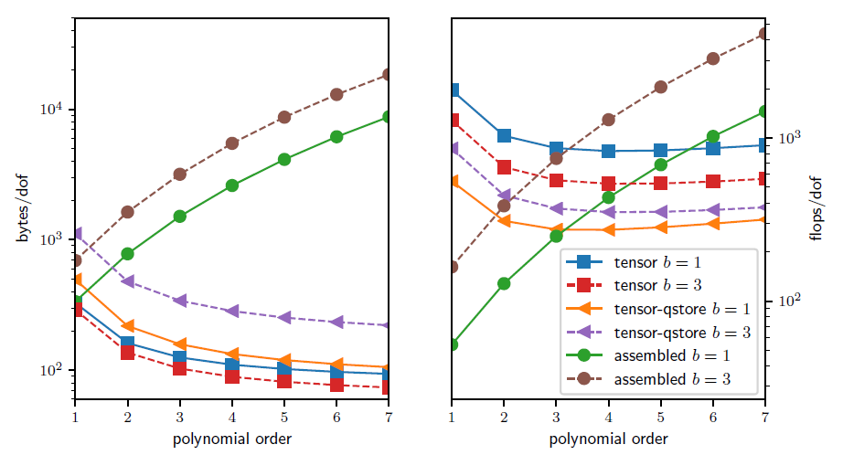

41) FEM/SEM#
Introduction to the Finite/Spectral Element Method
Matrix-free methods
2.1 Motivation
1. Introduction to the Finite/Spectral Element Method#
In Finite Element Methods (FEM) formulations, the weak form of a Partial Differential Equation (PDE)-which involves integrating all terms in the PDE over the domain-is evaluated on a subdomain \(\Omega_e\) (element) and the local results are composed into a larger system of equations that models the entire problem on the global domain \(\Omega\).
A finite element space is a function space in which each function is approximated with a finite-dimensional polynomial interpolation in each element. A Spectral Element Method (SEM) is a high-order (“exponential/spectral”) FEM, in which the nodes are non-equispaced.
Most FEM/SEM packages use polynomials as basis functions to approximate a given function (e.g., solution state). There are different ways of defininig basis functions: nodal basis functions and modal basis functions. Most FEM/SEM packages use nodal basis functions (e.g. by using Lagrange interpolation), which are defined via the values of the polynomials at particular nodal points in each element (termed Finite Element nodes).
Even though the basis functions can interpolate globally, it’s better to limit each function to interpolate locally within each element, so to avoid a dense matrix system of equations when adding up the element contributions on the global domain \(\Omega\).
The Finite Element nodes can be chosen to coincide with those of a particular quadrature rule, (this is referred to as using collocated nodes) which allows us to integrate functions over the domain without having the souble cost of defining the interpolating polynomial nodes and the quadrature rule nodes.
Let us give a concrete example of strong and weak form of a PDE.
A Poisson’s problem (in strong form) is given by
To obtain the weak form, let us multiply all terms by a test function \(v\) and integrate by parts (i.e., apply Gauss’ divergence theorem in multiple dimensions):
Often, we choose to represent a field (say, the velocity field) such that \(\nabla u \cdot \hat{\mathbf n} = 0\), so that we’re only left with the volumetric parts of the equation above.
Most SEM packages use the _Legendre-Gauss-Lobatto (LGL) quadrature nodes that we have seen earlier in the course amd take advantage of tensor-product basis functions on quadrilateral or hexaedral elements.
2. Matrix-free methods#
2.1 Motivation#
Historically, conventional high-order finite element methods were rarely used for industrial problems because the Jacobian rapidly loses sparsity as the order is increased, leading to unaffordable solve times and memory requirements.
This effect typically limited the order of accuracy to at most quadratic, especially because quadratic finite element formulations are computationally advantageous in terms of floating point operations (FLOPS) per degree of freedom (DOF) despite the fast convergence and favorable stability properties offered by higher order discretizations (see below).

In the figure above, we analyze and compare the theoretical costs, of different configurations: assembling the sparse matrix representing the action of the operator (labeled as assembled), non assembling the matrix and storing only the metric terms needed as an operator setup-phase (labeled as tensor-qstore) and non assembling the matrix and computing the metric terms on the fly and storing a compact representation of the linearization at quadrature points (labeled as tensor). In the right panel, we show the cost in terms of FLOPS/DOF.
This metric for computational efficiency made sense historically, when the performance was mostly limited by processors’ clockspeed.
A more relevant performance plot for current state-of-the-art high-performance machines (for which the bottleneck of performance is mostly in the memory bandwith) is shown in the left panel of the figure, where the memory bandwith is measured in terms of bytes/DOF.
We can see that high-order methods, implemented properly with only partial assembly, require optimal amount of memory transfers (with respect to the polynomial order) and near-optimal FLOPs for operator evaluation.
Thus, high-order methods in matrix-free representation not only possess favorable properties, such as higher accuracy and faster convergence to solution, but also manifest an efficiency gain compared to their corresponding assembled representations.
Nowadays, high-order numerical methods, such as the spectral element method (SEM)-a special case of nodal p-Finite Element Method (FEM) which can reuse the interpolation nodes for quadrature-are employed, especially with (nearly) affine elements, because linear constant coefficient problems can be very efficiently solved using the fast diagonalization method combined with a multilevel coarse solve.